👤 7. Interação do Primeiro Ícone

👉 Aqui temos a mesma condicional do projeto anterior mas, com os resultados da api.
- Criar um card pessoal utilizando o conceito de Flexbox no CSS ("alinhamento de elementos por meio de display: flex", etc.).
- Programar a interatividade na mudança de valores dos ícones por meio do JavaScript, usando o evento mouseenter.
👉 Logo abaixo temos um exemplo de HTML. Esse exemplo serve para que você possa criar o card de forma fácil, sem precisarmos nos aprofundar em outros conceitos. Apenas com o que sabemos até agora será possível realizar este exercício.
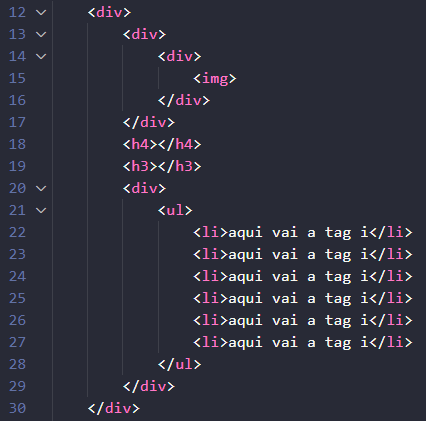
👉 A partir dessa estrutura básica de HTML, crie classes para essas tags e deixe o resultado o mais parecido possível com o exemplo do link abaixo ou com a imagem ilustrativa:
💾 Clique aqui para ver o exemplo.
👉 Todas as divs precisam de classes. Os conceitos de Flexbox são indispensáveis para obtermos o resultado final, pois serão eles — e somente eles — que irão centralizar absolutamente tudo no nosso projeto.
👉 Usaremos a tag i dentro da li, que é onde devem estar os ícones. Isso ocorre porque é mais simples usar ícones com a tag i. Para mudarmos a cor, usamos a propriedade color, exatamente como se os ícones fossem fontes de texto. Porém, para isso, precisamos importar o link desses ícones no nosso HTML, dentro da tag head.
👉 A importação dos ícones pode ser encontrada no mesmo site.
💾 Clique aqui para acessar.
👉 Clique em Docs no menu no topo da tela e, em seguida, na parte esquerda da página, onde diz Usage as a font. Nessa tela que se abrirá ao clicar, estará explicado e bem visível o link para usarmos os ícones como fonte.
👉 Agora é só procurar o ícone que você quer dentro desse site e copiar a tag i correspondente.
👉 No CSS, não se esqueça de zerar alguns estilos usando o seletor *.
👉 Para o alinhamento com Flexbox é de extrema importância definir altura e largura para o body. Lembre-se de que queremos uma página sem rolagem, o que significa que o body deve ocupar o tamanho total da tela.
👉 Para que os ícones tenham um efeito parecido com o do exemplo do site — onde, ao passar o mouse sobre eles, se movimentam no eixo Y — usaremos o CSS abaixo.
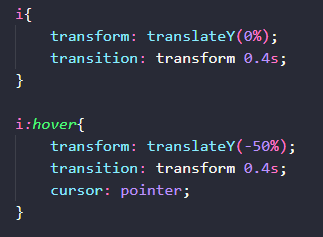
👉 transform: translateY(-50%); faz com que o ícone vá para cima. A medida poderia ser em px também, como (-50px). O importante é que o valor seja negativo, pois indica o movimento para cima.
👉 transition: transform 0.4s; define o tempo que o ícone leva para fazer o movimento.
👉 cursor: pointer; muda o cursor do mouse de seta para uma mão apontando o dedo.
👉 Crie um ID no h3 e outro no h4, além de uma classe na ul. Importante: a classe deve ser adicionada na tag ul, e não nas li. Com isso, teremos apenas 2 IDs no total. Lembre-se também de importar o script corretamente.
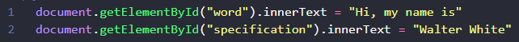
👉 O conteúdo de texto (innerText) do elemento HTML com o ID "word" é substituído pela string "Hi, my name is". A função document.getElementById( ) é usada para localizar o elemento.
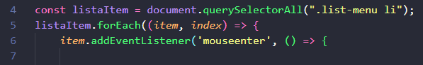
👉 Uma constante listItem é declarada para armazenar todos os elementos <li> que estão dentro de um elemento com a classe .list-menu, utilizando document.querySelectorAll( ). Em seguida, o código itera sobre cada um desses itens da lista com forEach( ). Para cada item, um ouvinte de evento é adicionado para o evento mouseenter, que é acionado quando o cursor do mouse entra na área do elemento.
👉 .list-menu é o nome dado à classe da tag ul; .list-menu li define a li que está dentro da classe .list-menu.
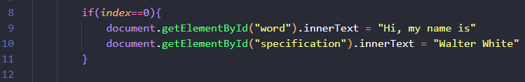
👉 É feita uma verificação condicional (if) para determinar se o valor do parâmetro index é igual a 0. Se a condição for verdadeira, o conteúdo de texto (innerText) do elemento com o ID "word" é substituído por "Hi, my name is", e o do elemento com o ID "specification" é substituído por "Walter White". A função document.getElementById( ) é usada para localizar cada um desses elementos.
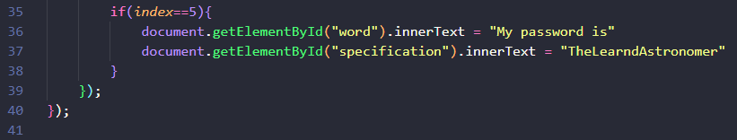
👉 Aqui temos o sexto if, mostrando que o modelo é igual ao primeiro.
👉 Faça o restante, que corresponde às verificações de 1 a 4.
👉 Nas linhas 39 e 40 temos o fechamento do forEach e do addEventListener.
- Consumir dados de uma API (randomuser.me) para gerar cards de perfis aleatórios.
- Utilizar funções assíncronas (async/await) para lidar com as requisições à API.
- Manter a interatividade dos ícones com o evento mouseenter, agora exibindo os dados vindos da API.
👉 A estrutura HTML permanece a mesma do projeto anterior. A grande mudança será no JavaScript, que agora buscará os dados de uma fonte externa.
👉 O CSS também pode ser mantido, pois a estrutura visual do card não será alterada.
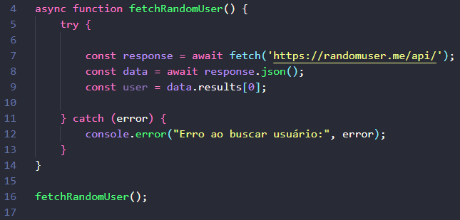
👉 Uma função assíncrona é uma função que não precisa esperar uma tarefa terminar para continuar executando o resto do código. Isso é importante quando lidamos com APIs, porque buscar dados na internet pode demorar, e não queremos que todo o nosso site trave enquanto isso acontece.
👉 Para criar uma função assíncrona, usamos a palavra-chave async antes da função. Dentro dela, usamos o await para esperar uma resposta antes de seguir para a próxima linha.
👉 A função fetch() é usada para buscar informações de algum lugar — geralmente da internet. Ela retorna uma promessa (Promise), ou seja, uma resposta que ainda não chegou, mas que vai chegar.
👉 Por isso, precisamos usar o await na frente do fetch para dizer: "Espere essa resposta antes de continuar".
👉 try e catch: Imagine que a internet caia ou o link da API esteja errado. O código pode dar erro! Para evitar que o site quebre, usamos try e catch. try: bloco onde colocamos o que queremos tentar executar. Catch (erro): bloco que será executado se der algum erro no try.
👉 data.results[0], essa linha serve, basicamente, para pegar a primeira pessoa retornada pela nossa API. O arquivo JSON começa com a chave results, por isso usamos ela no código. A constante chamada user recebe o valor de data.results[0]. A data é o nosso objeto — objetos são estruturas que armazenam várias informações dentro deles. Um exemplo comum é um carro, que pode ter modelo, nome, marca, ano etc.
👉 Nossa API retorna muitas informações, e por isso precisamos transformar o JSON (que é só um texto estruturado) em um objeto que o JavaScript consegue manipular. Essa conversão é feita com await response.json(), como mostramos na linha comentada do código.
👉 Depois que temos o objeto, só precisamos acessar os dados que queremos. Neste caso, usamos data.results[0] para pegar todas as informações da primeira pessoa gerada aleatoriamente pela API.
👉 fetchRamdomUser( ) é a chamada da função, serve para rodar todo o codigo.
👉 Resumindo: Uma função assíncrona fetchRandomUser é criada para buscar dados na API randomuser.me. O bloco try tenta fazer a requisição (fetch), converter a resposta para JSON e extrair o primeiro usuário. Se qualquer etapa falhar, o bloco catch captura o erro e o exibe no console. Finalmente, a função fetchRandomUser() é chamada para iniciar o processo.
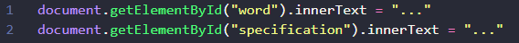
👉 Antes de preencher com os novos dados, o innerText dos elementos com IDs "word" e "specification" é definido como "...", servindo como um indicador visual de que os dados estão sendo carregados.
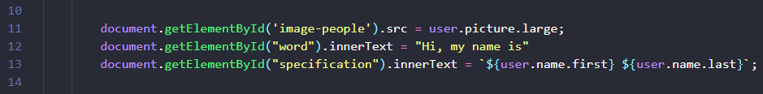
👉 temos três linhas onde passaremos os primeiros dados da API. Na primeira linha, temos o ID da imagem e o .src, pois precisamos passar a imagem como uma fonte de arquivo (um source). Após o sinal de igual, passaremos a imagem da API. Para isso, vamos acessar o link abaixo:
💾 Clique aqui para acessar.
👉 Assim que o link abrir, vamos clicar na caixinha Estilos de formatação, ela vai formatar o arquivo JSON da API. Agora só precisamos procurar a imagem. Nesta API, ela está com o nome de picture. Repare abaixo:
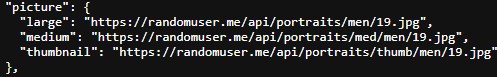
👉 Sabemos que nosso objeto é user. Também acabamos de ver que a imagem está com o nome picture, então temos: user.picture.
👉 Reparou que existem três atributos dentro de picture: large, medium e thumbnail. Precisamos escolher um deles. Com isso, teremos: user.picture.large.
👉 No nosso h2, como mostrado no exemplo anterior, temos o nome e o sobrenome. Tente procurar na API essas informações. Uma dica é usar Ctrl + F e procurar por palavras-chave como name, lastname, firstname, entre outras semelhantes.
👉 `${user.name.first} ${user.name.last}` a craze ( ` )e o cifrão ( $ ) usados neste exemplo são chamados de tamplete literal. Aproveite o Chat GPT e pesquise sobre tamplete literal para ver as diferenças.
👉 Resumindo: Após receber os dados da API, o atributo src da imagem com ID "image-people" é atualizado com a URL da foto do usuário (user.picture.large). Os elementos "word" e "specification" são preenchidos com um texto de introdução e o nome completo do usuário, que é construído dinamicamente usando os dados user.name.first e user.name.last.
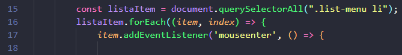
👉 Aqui temos a mesma estrutura do exerício anterior. Basicamente uma constante listItem armazena todos os elementos <li> dentro de .list-menu. O código então percorre cada item da lista usando forEach e adiciona um "ouvinte" para o evento mouseenter, que será acionado quando o mouse passar sobre cada ícone.
👉 Aqui temos a mesma condicional do projeto anterior mas, com os resultados da api.
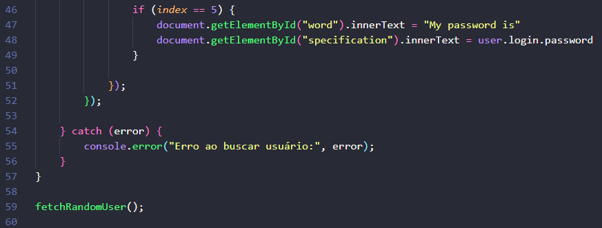
👉 Aqui temos o sexto if, mostrando que o modelo é igual ao primeiro.
👉 Faça o restante, que corresponde às verificações de 1 a 4.
👉 Nas linhas 51 e 52 temos o fechamento do forEach e do addEventListener.
👉 A última dica é referente à data, que virá com muitos dados. Vamos limitar para exibir apenas o dia, mês e ano, utilizando o método substring(0, 10). Esse método limita a string do primeiro caractere (índice 0) até o nono, totalizando 10 caracteres. Exemplo: 10-10-2025. user.dob.date.substring(0, 10)
👉 Adicione mais um ícone ao projeto, adicionando o html e se precisar modificando o css. Com este novo ícone, faça as modificações necessarias para o javaScript acessar uma nova informação na api para este ícone.
💰 Este desafio vale 5 moedas.